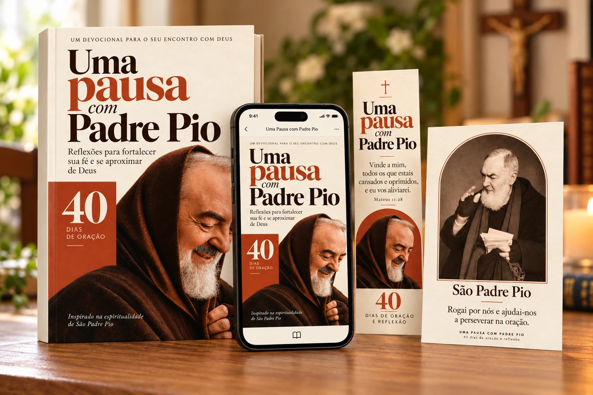
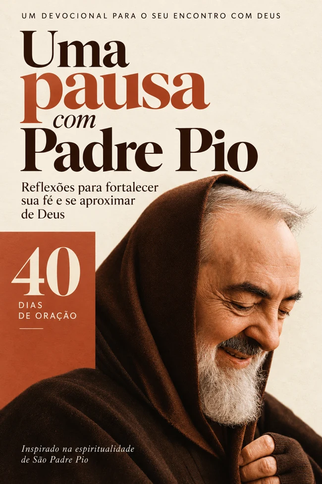
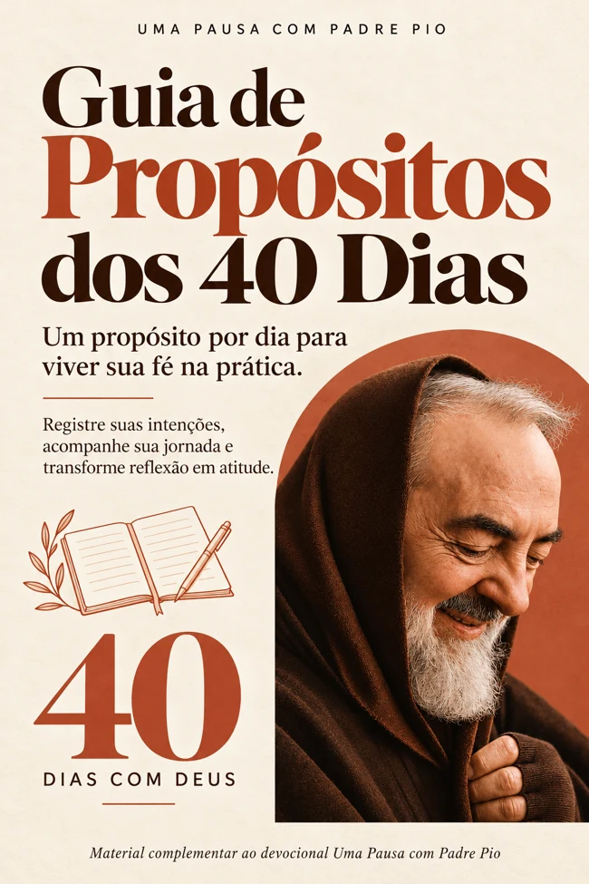
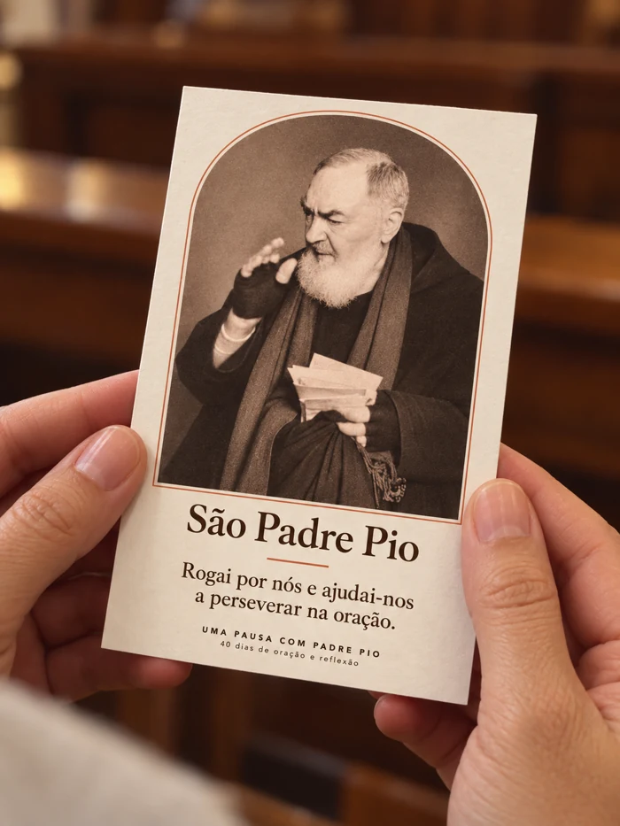
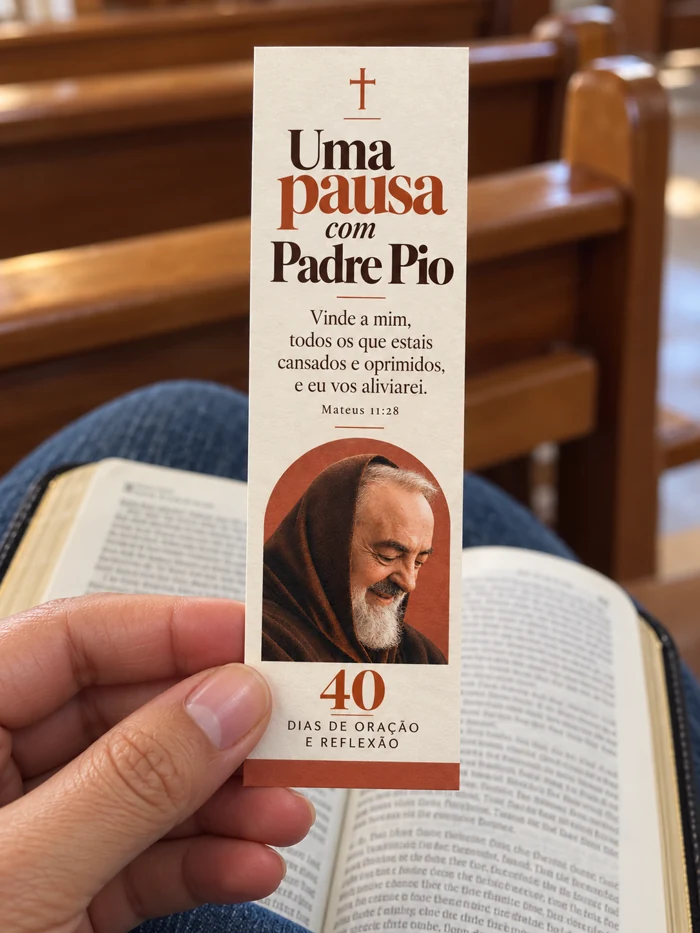
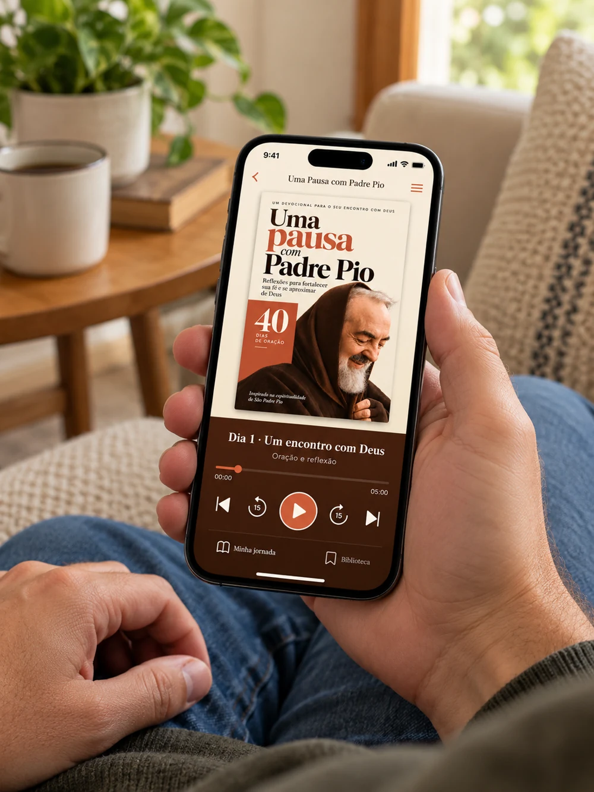

Encontre uma palavra
Uma passagem bíblica e uma reflexão para acolher o tema de cada dia.
Uma pausa na correria para se aproximar de Deus.
Reflexões, orações e propósitos para viver um encontro por dia. Leia pelo aplicativo ou baixe o livro para imprimir e fazer sua pausa longe das telas.
Quero começar minha jornadaR$ 29,90pagamento único · acesso vitalício

Produto digital. Imagens ilustrativas dos materiais que você pode imprimir.
Há dias em que o coração está cheio e faltam palavras para rezar.
Preocupações com a família, com a saúde, com o sustento. Ou apenas aquela sensação de viver no automático e deixar sua fé sempre para depois.
Uma Pausa com Padre Pio foi pensado para esse momento: uma jornada simples de acompanhar, com espaço para apresentar a Deus o que você está vivendo e levar a reflexão para a vida.
Uma passagem bíblica e uma reflexão para acolher o tema de cada dia.
Uma oração para começar e liberdade para acrescentar seus próprios pedidos.
Um propósito possível, uma pergunta e espaço para registrar seu caminho.
O devocional passa por temas como confiança, família, enfermidade, perdão, trabalho e recomeço. Veja um trecho real do livro.
Não precisa ler tudo de uma vez. Um dia, um encontro, um passo possível.
Talvez você tenha aberto este livro com um pedido muito definido. Uma conta vencida. Uma pessoa que não voltou para casa. Um resultado de exame. Uma conversa que o casamento não consegue mais ter.
Você não precisa esconder nada disso para começar a rezar. A pausa começa quando sua vida real encontra espaço diante de Deus.
Escolha um horário possível e um lugar simples para sua pausa. Anote uma intenção principal e duas pessoas pelas quais deseja rezar.
O livro é o começo. No aplicativo, você encontra materiais para acompanhar sua jornada e manter a oração presente no dia a dia.

O devocional completo de 40 dias, com 111 páginas. Leia no aplicativo ou baixe o ebook para imprimir.

Um apoio para suas intenções, seus registros e as atitudes que você deseja cultivar ao longo do caminho.

A imagem de São Padre Pio e uma breve invocação, em um cartão para baixar, imprimir e guardar com você.

Personalizado com a identidade do devocional e uma passagem bíblica para acompanhar suas leituras.
Um espaço para compartilhar intenções e caminhar em oração com outras pessoas.
Para acompanhar sua oração ouvindo e encontrar um momento de recolhimento na rotina.
Pensamentos curtos de São Padre Pio para acompanhar os dias do ano.
Papéis de parede para levar a identidade do devocional à sua tela de bloqueio.

Uma pausa que cabe no seu dia.Tenha os conteúdos reunidos no aplicativo. Quando quiser ficar longe das telas, baixe o livro e os materiais para imprimir.
Acompanhe o devocional onde estiver e retome a jornada no seu ritmo.
Encontre nas orações em áudio uma companhia para o seu momento com Deus.
Prepare sua Bíblia, seu material e um lugar tranquilo. A pausa também acontece fora do celular.
Imagem ilustrativa da experiência no aplicativo. Nenhum material físico é enviado.
Você não precisa saber por onde começar. A sequência do livro ajuda a encontrar um tema por dia.
Se precisar de mais tempo, tudo bem. Retome de onde parou.
“Vinde a mim, todos os que estais cansados e oprimidos, e eu vos aliviarei.”
MATEUS 11,28Acolhimento, silêncio, confiança, misericórdia e o compromisso de reservar um tempo para Deus.
Orações e reflexões sobre enfermidade, pedidos de cura, feridas interiores, cuidado e saudade.
Família, casamento, perdão, confiança e os desafios da convivência, com respeito e responsabilidade.
Trabalho, preocupações financeiras, decisões e recomeços, unindo oração e atitudes possíveis.
Espiritualidade de Padre Pio, discernimento, gratidão e continuidade da vida de oração.
Reserve um tempo para apresentar a Deus seus pedidos, encontrar uma palavra para o dia e cultivar uma vida de oração.
Todo o conteúdo é digital. Você escolhe o que deseja imprimir.
Seu aplicativo e todos os materiais incluídos.
Pagamento único. Sem mensalidade.
O essencial para escolher sua pausa com tranquilidade.
O produto é digital. Você terá acesso aos conteúdos pelo aplicativo e poderá baixar o ebook e os materiais disponíveis para impressão. Não há envio de livro, cartão ou marcador pelo correio.
O acesso completo ao aplicativo, o livro Uma Pausa com Padre Pio, o guia de propósitos, o cartão devocional, o marcador de Bíblia, a comunidade de oração, as orações em áudio, as frases para os dias do ano e os papéis de parede para o celular.
Não. A proposta é de pagamento único de R$ 29,90, com acesso vitalício. Não há mensalidade para acessar o pacote adquirido.
Sim. O ebook poderá ser baixado para impressão pessoal. Você também poderá imprimir o guia, o cartão devocional e o marcador. Os custos de papel e impressão ficam por sua conta.
Não é necessário ter uma rotina de oração já estabelecida. O devocional oferece linguagem acessível, reflexões e orações para ajudar você a começar. Você pode acrescentar suas próprias palavras e intenções.
Não. A jornada tem 40 encontros, mas você pode seguir no seu ritmo. Se perder um dia, retome de onde parou, sem precisar ler vários encontros para compensar.
Não. A proposta é reservar um momento para oração, leitura e reflexão. Nenhuma restrição alimentar é necessária para acompanhar o livro.
Não. É uma obra devocional contemporânea e independente, inspirada na espiritualidade de São Padre Pio. As reflexões e orações são atuais; os fatos biográficos e relatos históricos apresentados no livro têm fontes identificadas.
Sim. Esses pedidos encontram espaço na jornada, junto de reflexões sobre esperança, cuidado e atitudes possíveis. O material acompanha sua vida de fé sem garantir curas, reconciliações ou resultados financeiros e sem substituir cuidados profissionais necessários.
40 encontros · R$ 29,90 · Acesso vitalício